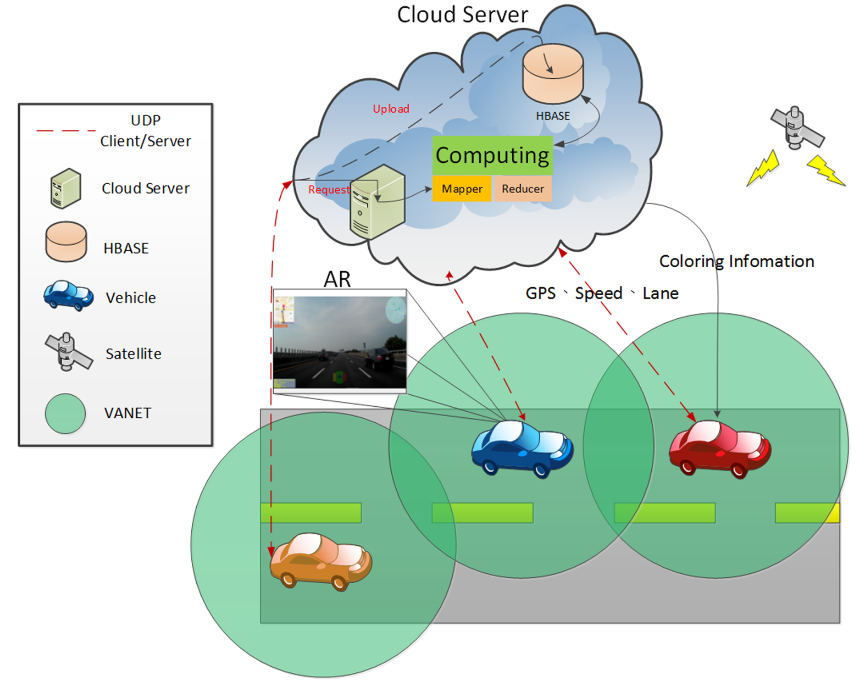

Cloud Computing with Threaten Color Routing AR Navigation System
| About AR Navigation | ||
|---|---|---|
|
AR Navigation為大學專題所開發的系統(2人合作)，我負責user端Android功能和介面設計，以Android Pad螢幕來模擬車用HUD，讓使用者可以透過擴增實境的畫面得知周遭經由雲端分析後的道路威脅資訊，同時也提供完善的語音避險機制(如建議時速、建議切換車道等)。 另外此系統整合導航資訊、交通路標、時速等資訊於擴增實境畫面上，讓駕駛不會因注意這些資訊時分心而造成意外。 |
||
| Technical Highlights | ||
|
||
| Architecture | ||
|  | ||